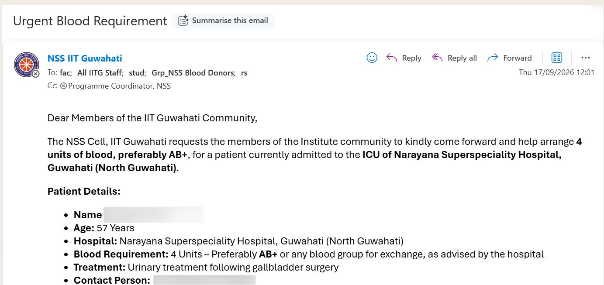
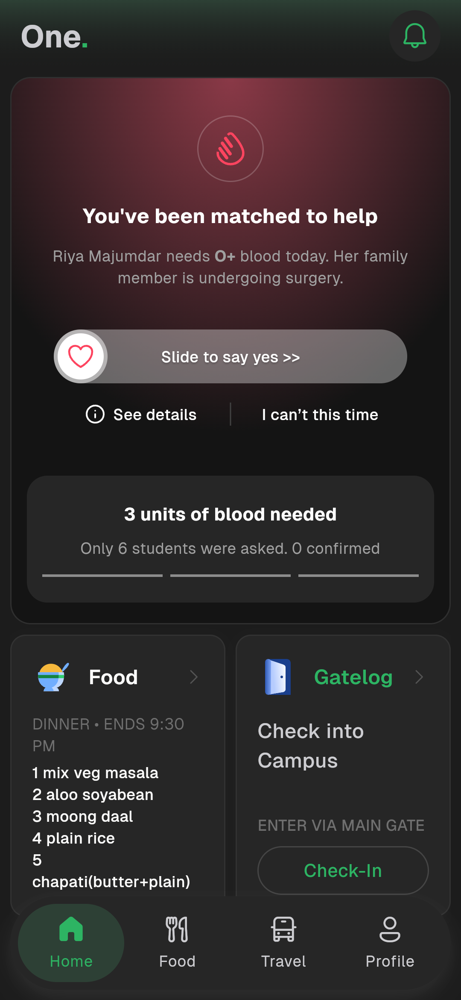
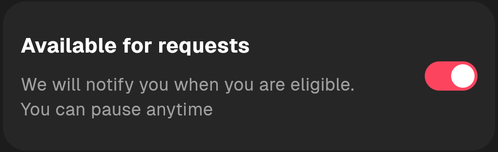
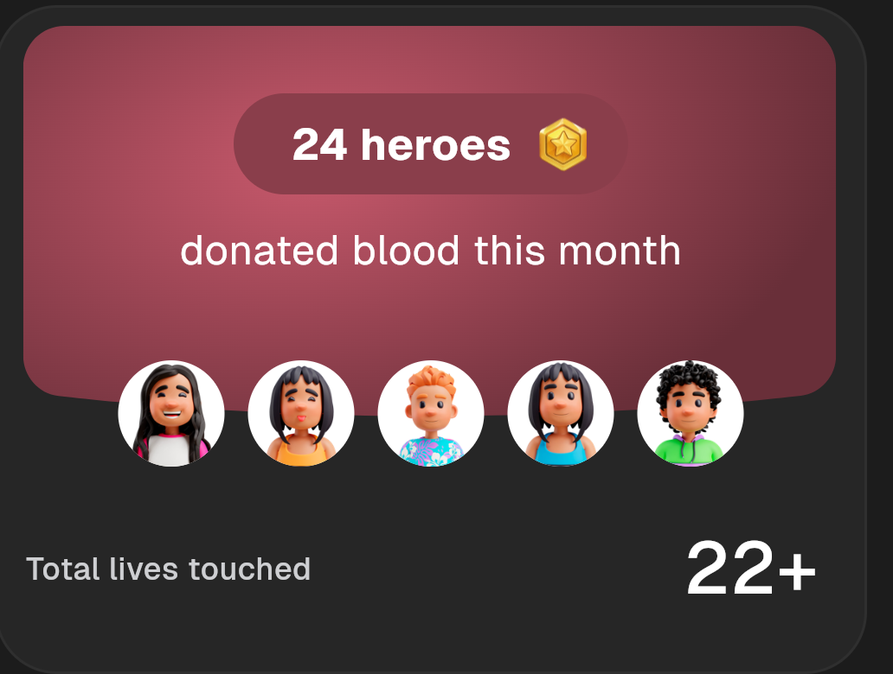
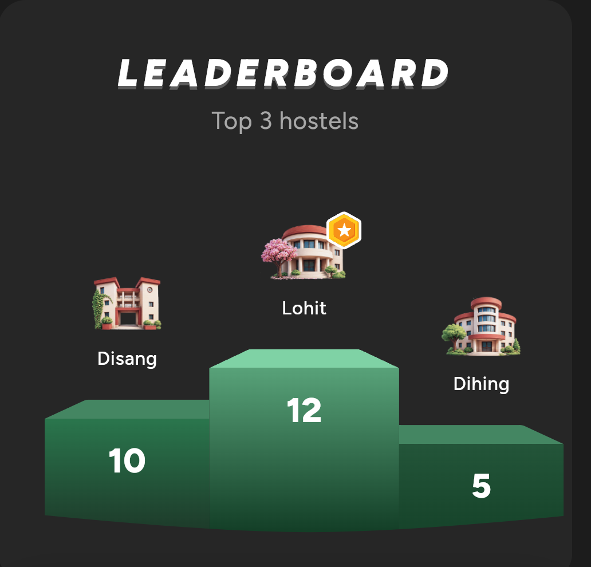
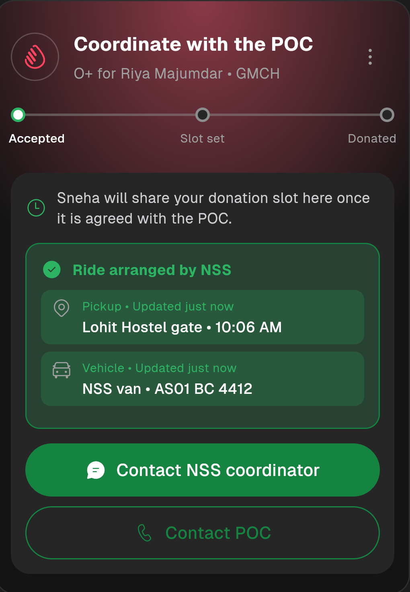
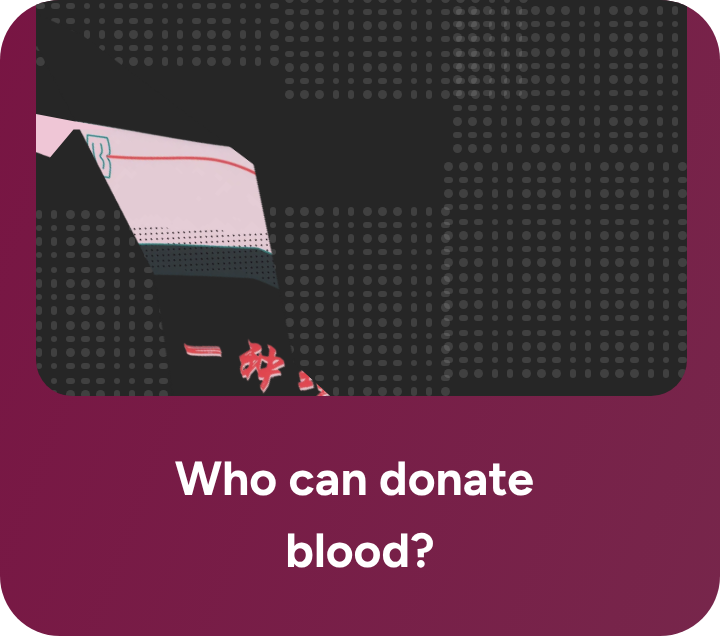
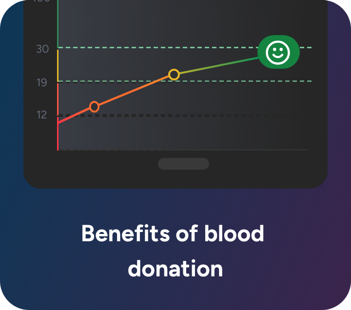
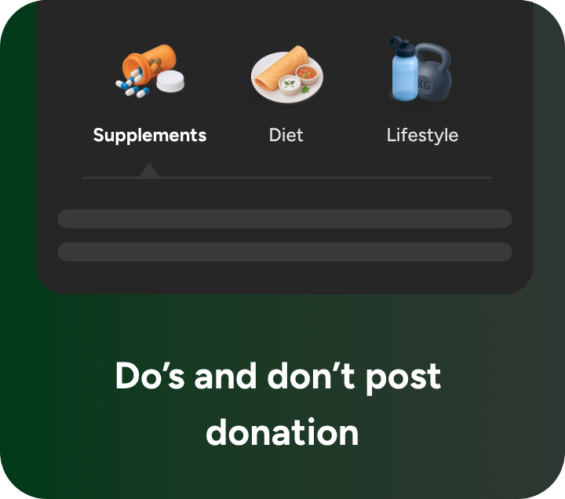

Breaking the Bystander Effect: Designing a Personalised Donor-Matching Experience for Urgent Blood Requests on Campus
264205004
Urgent blood requests at IIT Guwahati go out as one email to the whole campus, and almost no one answers. This project replaces that broadcast with a personal, time-bound ask to a few matched donors inside OneStop, the campus super-app.
The NSS office needs donors. Its only tool is an email to everyone.
The NSS Office, IIT Guwahati
Goal: engage more students in urgent blood donation, and keep them coming back.


Apathy: sent to everyone, it feels meant for no one.
What students said
"Why didn't you respond to the NSS blood requirement mail?"
Why it happens: five reasons, five known biases
What students said (survey) → the behavioural cause behind it (secondary research).
ABystander effect
In a crowd, personal responsibility dissolves.
BHabituation
Repeated, similar mails train the brain to ignore the whole category.
CFriction overestimation
People overestimate the effort of responding and travelling.
DFirst-timer barrier
Without knowing eligibility or what happens, people default to "not me".
ENo feedback, no social proof
Giving goes unseen, so it never spreads.
The hook
"The times I donated were when someone personally asked me."

The solution in OneStop, answering A–E

For the NSS office, every gap closed
- G1Matched, not broadcast: raise once, sent to eligible donors only.
- G2Live view: asked, seen, said yes, units left.
- G3Slots and rides handled inside the donor's card.
- G4Confirmed and remembered: a growing donor registry.










